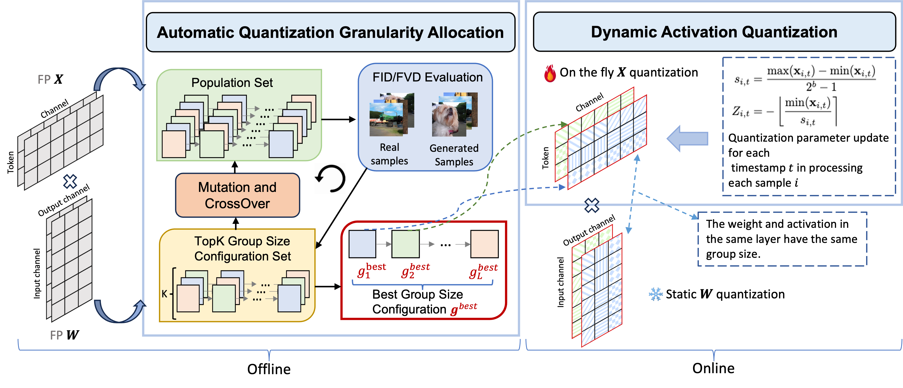

Q-DiT: Accurate Post-Training Quantization for Diffusion Transformers

Abstract
Recent advancements in diffusion models, particularly the architectural transformation from UNet-based models to Diffusion Transformers (DiTs), significantly improve the quality and scalability of image/video generation. However, despite their impressive capabilities, the substantial computational costs of these large-scale models pose significant challenges for real-world deployment. Post-Training Quantization (PTQ) emerges as a promising solution, enabling model compression and accelerated inference for pretrained models, without the costly retraining. However, research on DiT quantization remains sparse, and existing PTQ frameworks, primarily designed for traditional diffusion models, tend to suffer from biased quantization, leading to notable performance degradation. In this work, we identify that DiTs typically exhibit significant spatial variance in both weights and activations, along with temporal variance in activations. To address these issues, we propose Q-DiT, a novel approach that seamlessly integrates two key techniques: automatic quantization granularity allocation to handle the significant variance across input channels of weights and activations, and dynamic activation quantization to adaptively capture activation changes across timesteps. Extensive experiments conducted on ImageNet and VBench demonstrate the effectiveness of the proposed Q-DiT. Specifically, when quantizing DiT-XL/2 to W6A8 on ImageNet $256 \times 256$, Q-DiT achieves a remarkable reduction in FID by 1.09 compared to the baseline. Under the W4A8 setting, it maintains high fidelity in image and video generation, establishing a new benchmark for efficient, high-quality quantization in DiTs.
Framework

Overview of the proposed Q-DiT. The weights and activations within each layer are quantized with the same group size. Group size configurations allocated for each layer are based on the evolutionary search results, which are guided by the FID/FVD score between the real samples and samples generated by the quantized model. The activations are dynamically quantized during runtime.
Video Generation Results
Q-DiT (W4A8)
A majestic beauty of a waterfall cascading down a cliff into a serene lake. The waterfall, with its powerful flow, is the central focus of the video. The surrounding landscape is lush and green, with trees and foliage adding to the natural beauty of the scene. The camera angle provides a bird's eye view of the waterfall, allowing viewers to appreciate the full height and grandeur of the waterfall. The video is a stunning representation of nature's power and beauty.
A vibrant scene of a snowy mountain landscape. The sky is filled with a multitude of colorful hot air balloons, each floating at different heights, creating a dynamic and lively atmosphere. The balloons are scattered across the sky, some closer to the viewer, others further away, adding depth to the scene. Below, the mountainous terrain is blanketed in a thick layer of snow, with a few patches of bare earth visible here and there. The snow-covered mountains provide a stark contrast to the colorful balloons, enhancing the visual appeal of the scene. In the foreground, a few cars can be seen driving along a winding road that cuts through the mountains. The cars are small compared to the vastness of the landscape, emphasizing the grandeur of the surroundings. The overall style of the video is a mix of adventure and tranquility, with the hot air balloons adding a touch of whimsy to the otherwise serene mountain landscape. The video is likely shot during the day, as the lighting is bright and even, casting soft shadows on the snow-covered mountains.
A serene underwater scene featuring a sea turtle swimming through a coral reef. The turtle, with its greenish-brown shell, is the main focus of the video, swimming gracefully towards the right side of the frame. The coral reef, teeming with life, is visible in the background, providing a vibrant and colorful backdrop to the turtle's journey. Several small fish, darting around the turtle, add a sense of movement and dynamism to the scene. The video is shot from a slightly elevated angle, providing a comprehensive view of the turtle's surroundings. The overall style of the video is calm and peaceful, capturing the beauty and tranquility of the underwater world.
A vibrant underwater scene. A group of blue fish, with yellow fins, are swimming around a coral reef. The coral reef is a mix of brown and green, providing a natural habitat for the fish. The water is a deep blue, indicating a depth of around 30 feet. The fish are swimming in a circular pattern around the coral reef, indicating a sense of motion and activity. The overall scene is a beautiful representation of marine life.
A bustling city street at night, filled with the glow of car headlights and the ambient light of streetlights. The scene is a blur of motion, with cars speeding by and pedestrians navigating the crosswalks. The cityscape is a mix of towering buildings and illuminated signs, creating a vibrant and dynamic atmosphere. The perspective of the video is from a high angle, providing a bird's eye view of the street and its surroundings. The overall style of the video is dynamic and energetic, capturing the essence of urban life at night.
A snowy forest landscape with a dirt road running through it. The road is flanked by trees covered in snow, and the ground is also covered in snow. The sun is shining, creating a bright and serene atmosphere. The road appears to be empty, and there are no people or animals visible in the video. The style of the video is a natural landscape shot, with a focus on the beauty of the snowy forest and the peacefulness of the road.
The dynamic movement of tall, wispy grasses swaying in the wind. The sky above is filled with clouds, creating a dramatic backdrop. The sunlight pierces through the clouds, casting a warm glow on the scene. The grasses are a mix of green and brown, indicating a change in seasons. The overall style of the video is naturalistic, capturing the beauty of the landscape in a realistic manner. The focus is on the grasses and their movement, with the sky serving as a secondary element. The video does not contain any human or animal elements.
A serene night scene in a forested area. The first frame shows a tranquil lake reflecting the star-filled sky above. The second frame reveals a beautiful sunset, casting a warm glow over the landscape. The third frame showcases the night sky, filled with stars and a vibrant Milky Way galaxy. The video is a time-lapse, capturing the transition from day to night, with the lake and forest serving as a constant backdrop. The style of the video is naturalistic, emphasizing the beauty of the night sky and the peacefulness of the forest.